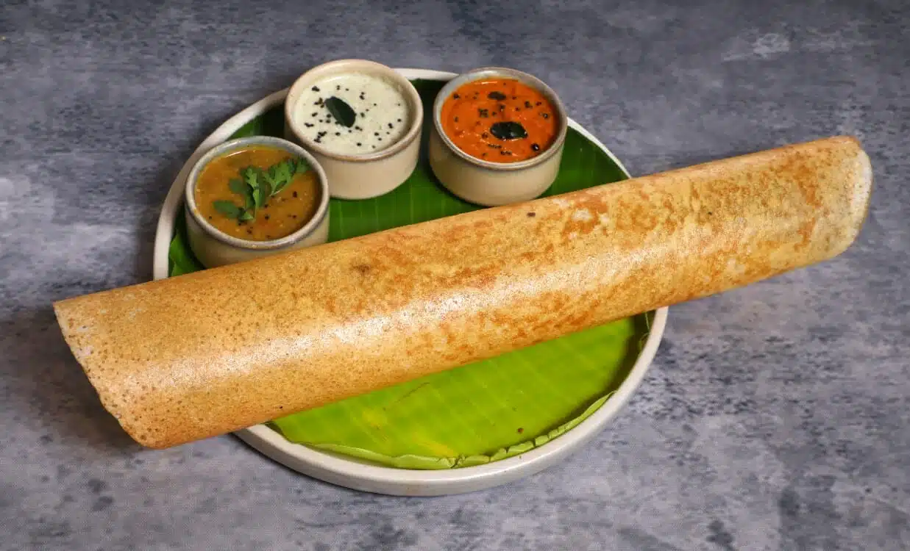

Dosa

Description
Plain Dosa is a classic South Indian dish that needs no introduction. It is a thin, crispy pancake with fermented rice and lentil batter, served with various chutneys and sambar. The humble Plain Dosa is a staple in many Indian households and is loved for its simplicity and versatility. Whether you have it for breakfast, lunch or dinner, it’s a dish that will satisfy your taste buds.
Ingredients
- 4 cup Boiled Rice
- 1 1/4 cup Urad Dal
- 1 tsp Fenugreek Seeds
- 1/2 cup Oil
- Salt as per taste
Steps
- Soak rice and urad dal separately for 3 hours.
- Drain and grind them separately and smoothly.
- Mix both the batter together along with salt and close with a lid.
- Allow it to ferment for 5 to 6 hours.
- Heat a tawa and smear it with 1 tsp of oil in the center.
- Pour 1/4 cup of batter onto the tawa.
- Spread it evenly into a round shape.
- Add 1 tsp of oil on the sides and on the surface of dosa.
- Turn over when the underside is done and cook the other side.
- Serve hot with chutney and sambar or with dosa molaga podi.